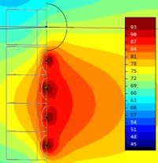

| Identifier | Range= | |
| Identifier | Range_min=, Range_max= | |
| Format | Floating point value | |
| Purpose | Ranging of result | |
| Used in | Field, BE_Spectrum, Radiation_Impedance, LE_Spectrum | |
Range= is used in Observation Scripts where it specifies the difference between the maximum and minimum. The actual maximum is determined automatically.
The range of spectral curves can be altered sub-sequentially in VACS.
Range_min= and Range_max= specify the lower and upper bound explicitly. You can mix these parameters with Range=.

Field RefNodes="N" BodeType=LeveldB; StepSize=3; Range=50; Range_max=95 101 2001 2002 2003 2004 102 3001 3002 3003 3004
In this example we specify contouring in the Range=50dB, where the maximum is at Range_max=95dB.